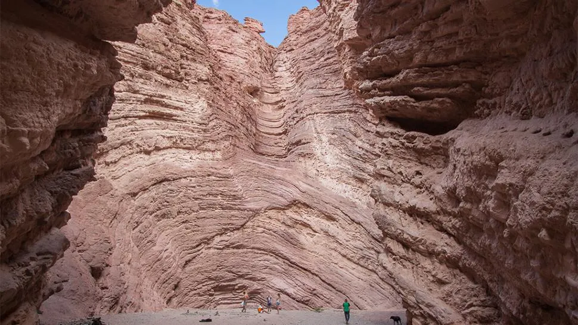
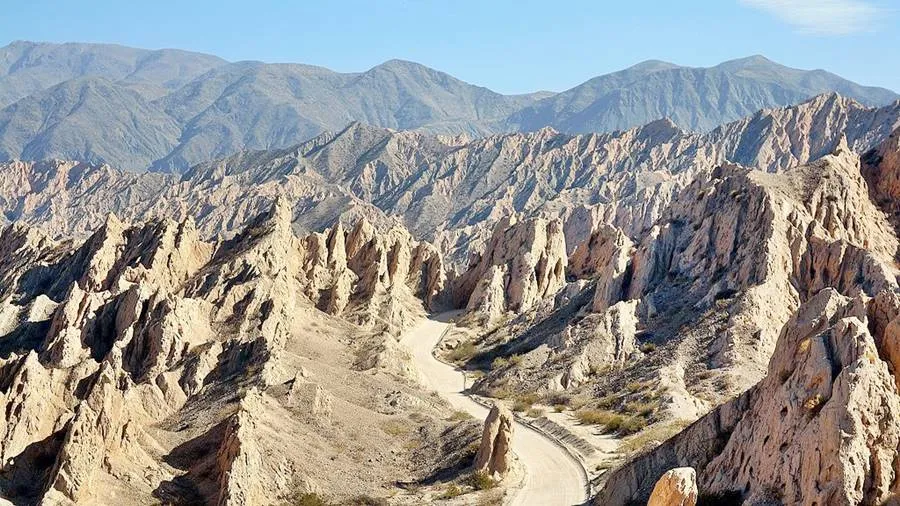
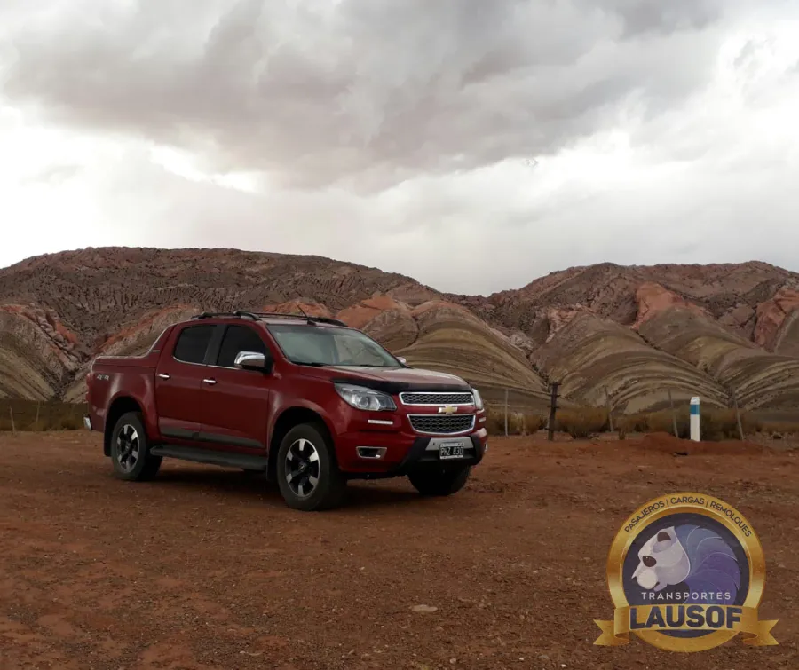
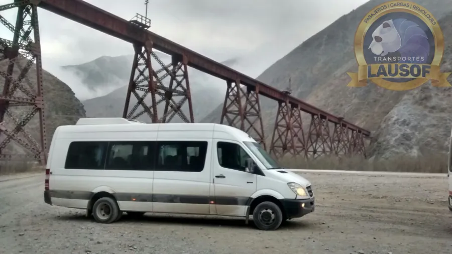
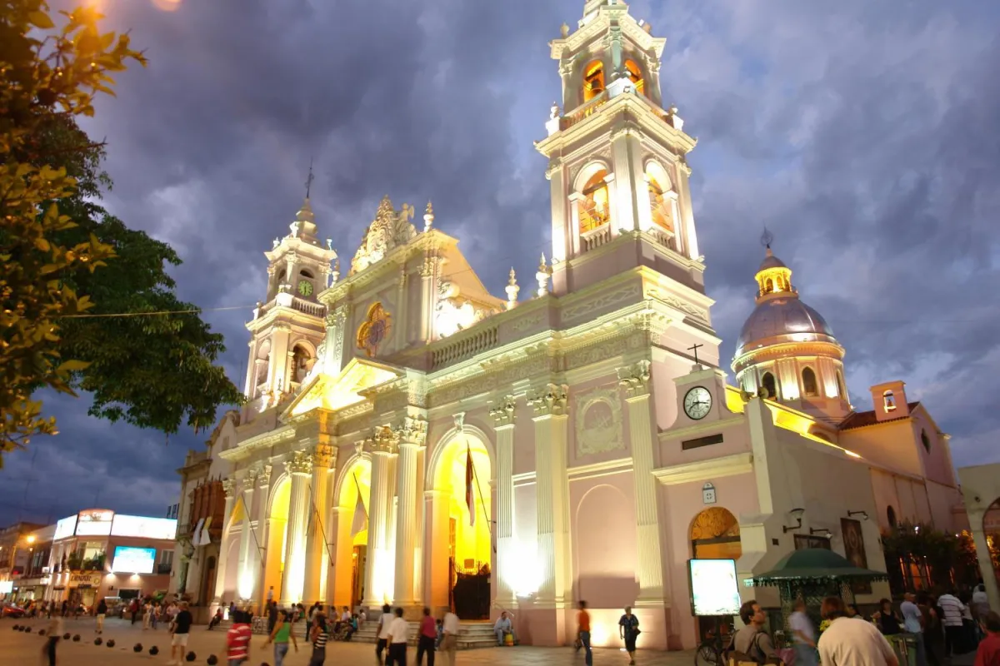
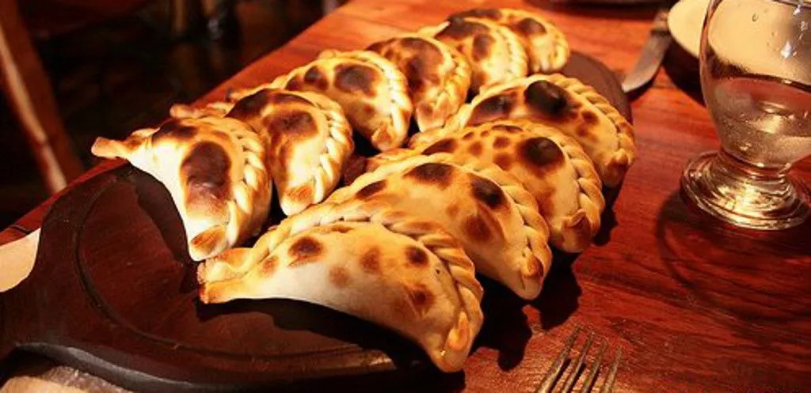

Cafayate y la Quebrada de las Conchas
La ruta 68, la Garganta del Diablo y los viñedos. Ideal para el día completo.
Turismo en Salta y Jujuy
Salta enamora, y nosotros la recorremos todas las semanas. Hacemos traslados turísticos por los circuitos clásicos de Salta y Jujuy en combis con chofer y camionetas 4x4, para agencias de turismo, grupos, empresas y familias.
Circuitos
Vos elegís el destino; nosotros ponemos la unidad, el chofer que conoce el camino y la tranquilidad de viajar con una empresa habilitada.

La ruta 68, la Garganta del Diablo y los viñedos. Ideal para el día completo.

El camino de montaña clásico de los Valles Calchaquíes.

El cerro de los Siete Colores y los pueblos de la Quebrada, en Jujuy.

Por San Antonio de los Cobres o por Jujuy, en unidades preparadas para la altura.

Para los que buscan el Norte más profundo. Camino de ripio: se hace en unidades adecuadas.

La zona del Tren a las Nubes y el viaducto La Polvorilla, que conocemos también por nuestro trabajo de años en la Puna.
Cómo viajamos
Para agencias y empresas
Trabajamos con agencias de turismo desde hace años: conocemos los tiempos de un receptivo, las paradas que valen la pena y lo que significa cumplir el horario. Si tu agencia necesita unidades con chofer para la temporada, escribinos y lo coordinamos.
Escribinos por WhatsAppY en el camino, siempre hay tiempo para una empanada salteña, un locro o un tamal: la comida regional es parte del viaje.


Contanos el destino, la fecha y cuántos viajan. Te respondemos con la cotización en el día.
Consultar disponibilidad